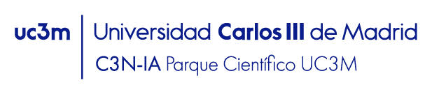

Los incendios no se apagan solo en verano. Se evitan todo el año.
Somos un equipo de ingeniería, observación de la Tierra e inteligencia artificial construyendo SilvIA desde Madrid. Nuestra obsesión: que quien gestiona un territorio decida con datos y a tiempo.
Los datos para prevenir llevan años orbitando sobre nosotros. Faltaba quien los bajara a tierra.
SilvIA nace de una constatación incómoda: cada verano, España y Europa se juegan miles de hectáreas, y demasiadas vidas, mientras los datos capaces de anticipar el riesgo ya existen. Los satélites del programa Copernicus llevan años observando nuestros montes en cada pasada. El problema nunca fue la falta de información; fue que esa información no llegaba, en forma útil y a tiempo, a las manos que deciden.
Eso es lo que construimos: la capa que falta entre el satélite y la decisión. Un sistema que convierte la observación de la Tierra en respuestas concretas: dónde mirar, cuándo actuar, con qué certeza. Para quien gestiona territorio, asegura riesgo o cuida de su propio monte.
Y una convicción que lo ordena todo: la prevención le gana al fuego. Anticipar el riesgo con días de margen es la diferencia entre planificar y perseguir, entre invertir en evitar y gastar en apagar. A eso dedicamos cada línea de código. No venimos a sustituir a quienes conocen el territorio ni a los sistemas oficiales de alerta: venimos a darles mejor información en tiempo útil.
Tecnología espacial europea, validación institucional.
ESA BIC — Agencia Espacial Europea
SilvIA está incubada en el Business Incubation Centre de la Agencia Espacial Europea, la red que valida y acompaña a las startups que convierten tecnología espacial en aplicaciones reales. Trabajamos sobre datos del programa Copernicus de la Unión Europea.

Parque Científico UC3M — Incubadora C3N-IA
Formamos parte del ecosistema de innovación en inteligencia artificial de la Universidad Carlos III de Madrid, desde su parque científico en Leganés.
Las personas detrás de cada señal.
Perfiles distintos, una misma regla: ninguna afirmación sin evidencia detrás.
Claridad ante la incertidumbre.
Claridad
Traducimos lo complejo a lenguaje simple, sin simplificar de más. Si no se entiende, no está terminado.
Rigurosidad
Cada afirmación, medida. Preferimos un dato modesto y cierto a una promesa brillante y hueca.
Confianza
La incertidumbre existe y la mostramos. Cada señal lleva su nivel de confianza; ninguna decisión se toma a ciegas.
Apoyo a la decisión. Nunca autoridad decisional.
¿Hablamos de tu territorio?
Si gestionas, aseguras o posees terreno forestal, cuéntanoslo: te enseñamos SilvIA trabajando sobre tus propios datos. Y si quieres construir esto con nosotros, también queremos conocerte.